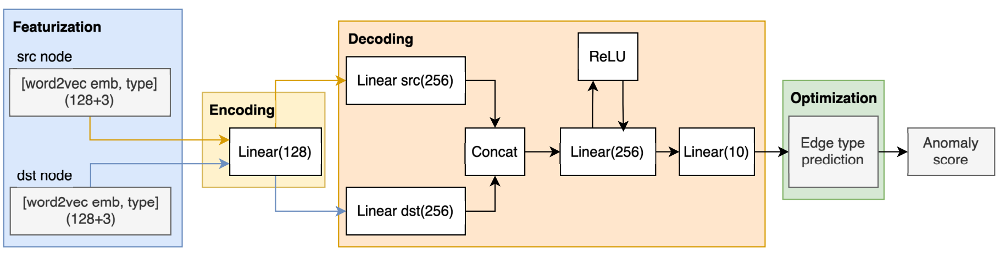
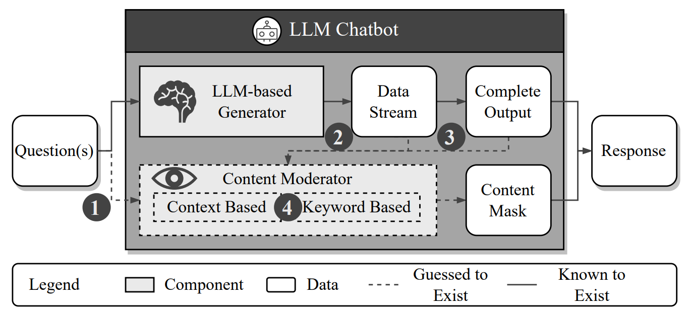

Research
I am interested in computer vision and machine learning. My current research focuses on test-time adaptation.
|
|

|
Sometimes Simpler is Better: A Comprehensive Analysis of State-of-the-Art Provenance-Based Intrusion Detection Systems
Tristan Bilot,Baoxiang Jiang,Zefeng Li,Nour El Madhoun, Khaldoun Al Agha,Anis Zouaoui,Thomas Pasquier
USENIX Security Symposium, 2025
paper /
code
We implemented eight state-of-the-art systems within a unified framework and identified nine key shortcomings that hinder their practical adoption. Through extensive experiments, we quantify the impact of these shortcomings using cybersecurity-oriented metrics and propose solutions to address them for real-world applicability.
|
|

|
MASTERKEY: Automated jailbreaking of large language model chatbots
Gelei Deng,Yi Liu,Yuekang Li,Kailong Wang,Ying Zhang,Zefeng Li,Haoyu Wang, Tianwei Zhang,Yang Liu
NDSS, 2024
paper /
code/
slides
We present a novel method based on time-based characteristics to dissect LLM chatbot defenses. This technique, inspired by time-based SQL injection, uncovers the workings of these defenses and demonstrates a proof-of-concept attack on several LLM chatbots.
|
|
{kind=link}